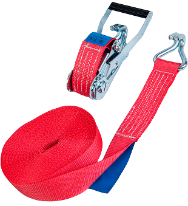

Как получить скидку на фильтры?
С 1 по 31 июля 2024, при покупке любого моторного масла и двух или трёх и более фильтров, Вы получаете скидку 10% и 15% соответственно на покупку других фильтров.
Полный список товаров, участвующих в акции, можно посмотреть ниже:

Условия акции
- Акция действует с 1 по 31 июля 2024 года во всех магазинах ARMTEK;
- В акции участвуют только физические лица;
- В акции участвуют товары, находящиеся в наличии.
При эксплуатации стяжных ремней следует соблюдать следующие требования и правила:
- Размещать ремни над грузом следует как можно равномернее.
- Нагрузка на ремни не должна превышать допустимый максимум.
- Запрещено делать на ременной ленте какие-либо узлы.
- Нельзя натягивать ремни на острую поверхность объекта.
- При установке ремней нужно следить за тем, чтобы они не перекрутились и максимально обхватывали объект.
- Ни в коем случае посредством ремней нельзя поднимать груз, а следует использовать строго по назначению, т.е. для крепежа.
- Перед использованием ремней обязательно нужно проверять их на предмет повреждений и деформаций.

Как правильно подобрать масло и фильтр для своего авто?
Подобрать моторное масло онлайн и оформить заказ можно в нашем сервисе подбора запчастей: